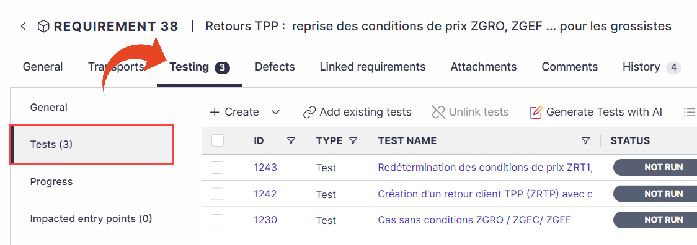
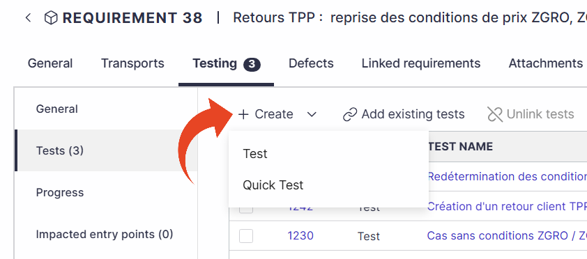
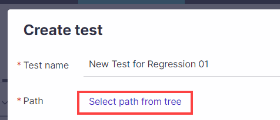
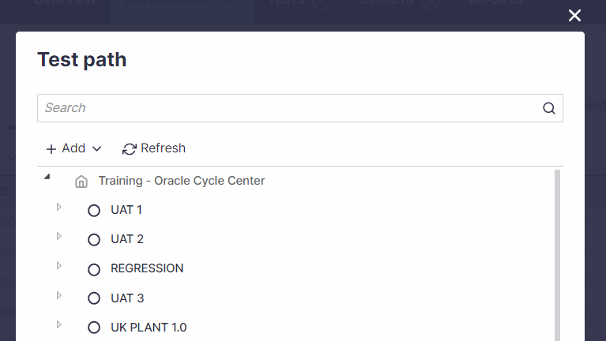
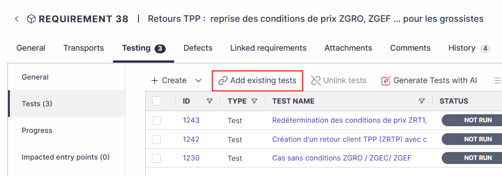
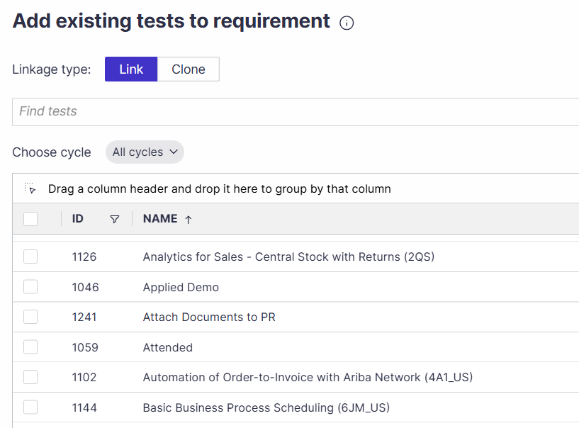
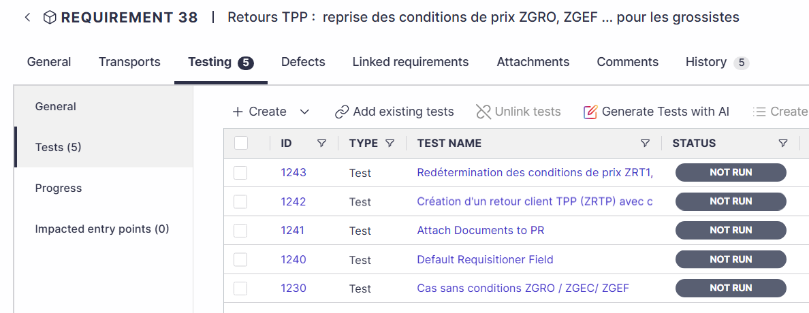

Panaya Test Dynamix — 機能・導線・画面
確認日：2026年10月27日。比較の見どころ・画面／動画ギャラリー
調査範囲
企業システムの要求・テスト管理・手動記録・再利用。自律探索Agentだけの製品としては扱わない。
比較上の位置：要求・UAT・証跡管理の比較。追加理由：要求とテスト・担当・証拠・不具合を結び、業務担当が受け入れ確認する工程で重なるため。
公式Docsの要求→テストの画面例。録画extensionは導入していない。liveの要求承認・録画・defect更新は未操作。
作業の流れ
Requirement／Feature → Testsを作成・link → cycle／business process → 担当者がRun & Document → evidence → defect → 修正確認・Quick Test再利用
機能の構成
Requirement内のTesting > Tests／Progress、cycles・folders・business processes、assigned tests、evidence、defects、comments。
下表は公開説明・文書の要約。実操作した範囲は画面一覧と調査範囲に限定し、表全体を実機検証済みとはしない。
| 段階 | 画面・機能 | 入力・操作と次の行動 |
|---|---|---|
| 要求 | Requirement・Feature・Workstream | 対象要求からTesting > Testsへ進む。 |
| 作成 | Create／Add existing tests | 新規作成、既存のlink、cloneしてlinkを選ぶ。 |
| 整理 | Path・cycle・business process | テストの所属先と実施単位を管理する。 |
| 担当 | Assigned activities・Test list | 担当者が自分の実施すべきテストへ進む。 |
| 実行 | Recorder・Manual run | Web／SAPの操作を記録する経路と、手動で成否を付ける経路。 |
| 証拠 | Test evidence・Export | 録画・画像等を確認して、単独・複数の証跡を出力する。 |
| 問題 | Defect | 実行中またはアプリから起票し、修正確認後にclose・再発時にreopen。 |
| 再利用 | Quick Tests・共有 | 実行証拠をscriptに変換し、コメント・添付・通知で共同作業する。 |
人の担当と比較上の着眼点
業務上の期待、実施、成否、欠陥の判断と修正確認を担当する。
調査者の解釈：業務担当者のUATで、実行・証跡・問題と要求の対応が残るかを比べる。 製品性能の優劣を実証した結論ではない。
動画と見る場面
製品操作を確認できる動画を今回保存できていない。存在しない・非対応という意味ではない。問い合わせ画面で代用しない。
画面一覧
| 画面 | 種別 | 出典 |
|---|---|---|
 Requirement > Testing > Tests |
official-ui-image | 掲載元 |
 要求から新規Test／Quick Testを作成 |
official-ui-image | 掲載元 |
 Create test：名前と所属先 |
official-ui-image | 掲載元 |
 cycle・business processの選択 |
official-ui-image | 掲載元 |
 要求へ既存テストを追加 |
official-ui-image | 掲載元 |
 既存テストのlink／clone |
official-ui-image | 掲載元 |
 要求に紐付いたテストと状態 |
official-ui-image | 掲載元 |